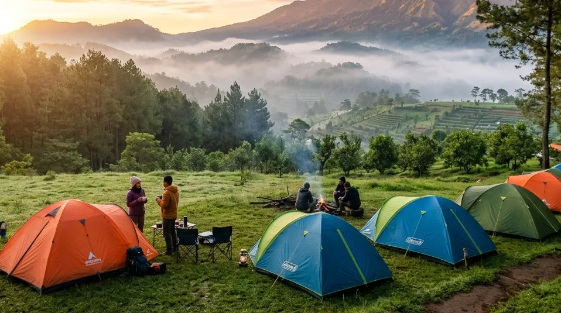

Kehidupan modern di perkotaan sering kali memaksa kita untuk terus berlari di atas *treadmill* rutinitas yang seolah tidak berujung. Kemacetan, polusi udara, serta tekanan tenggat waktu pekerjaan secara perlahan akan mengikis kesehatan mental maupun fisik kita. Pada titik kulminasi stres ini, fenomena pencarian informasi seputar Menikmati Sejuknya Kota Apel: Rekomendasi Spot Camping Terbaik di Batu untuk Healing Akhir Pekan menjadi tren pencarian teratas di berbagai mesin pencari. Alam, dengan segala ritmenya yang lambat dan menenangkan, selalu berhasil menawarkan antidotum (penawar) terbaik bagi jiwa-jiwa yang kelelahan.
Kota Batu, yang sejak era kolonial Belanda telah dijuluki sebagai *De Kleine Zwitserland* (Swiss Kecil) di Jawa Timur, tidak sekadar mengandalkan deretan taman hiburan buatannya. Lebih dari itu, identitas sejati Kota Apel ini sejatinya berakar kuat pada kontur alam pegunungannya yang agung. Menginap di dalam tenda beralaskan tanah, dinaungi rimbunnya dedaunan, dan dibangunkan oleh harmoni suara burung adalah kemewahan tersendiri yang tidak bisa dibeli dengan harga kamar hotel berbintang manapun. Mari kita bedah secara komprehensif panduan teknis dan rekomendasi destinasi kemah terbaik yang wajib Anda coba di akhir pekan ini.
1. Mengapa Kota Apel Menjadi Destinasi Utama untuk Healing?
Tidak diragukan lagi, Batu adalah "ibukota" wisata alam di Jawa Timur. Namun, apa secara spesifik yang membuatnya begitu ideal untuk aktivitas *outdoor* seperti berkemah?
Elevasi Geografis dan Mikroklimat Pegunungan
Berada di ketinggian rata-rata 700 hingga 1.700 meter di atas permukaan laut (mdpl), Kota Batu dikelilingi oleh benteng alam berupa Gunung Arjuno, Gunung Welirang, dan Gunung Panderman. Ketinggian ini menciptakan mikroklimat khas dengan suhu udara rata-rata 15°C hingga 19°C. Hawa sejuk yang menggigit di malam hari ini secara biologis sangat efektif untuk merangsang produksi hormon melatonin, yang akan menghasilkan kualitas tidur luar biasa lelap (*deep sleep*) yang jarang Anda dapatkan di perkotaan bersuhu panas.
Infrastruktur Pariwisata yang Sangat Matang
Salah satu hambatan terbesar orang-orang urban untuk berkemah adalah rasa takut akan ketidaknyamanan. Beruntungnya, Kota Batu telah mengembangkan infrastruktur pariwisata yang sangat mapan. Saat ini, konsep berkemah tidak lagi menuntut Anda untuk mendaki berjam-jam membawa keril berat. Akses jalan aspal yang mulus memungkinkan kendaraan pribadi (*campervan friendly*) untuk parkir tepat di sebelah area kemah, lengkap dengan ketersediaan jaringan listrik dan sumber air bersih komunal.
BACA JUGA (Navigasi Kemah Batu):
2. Rekomendasi Spot Camping Terbaik di Batu untuk Liburan Anda
Dengan banyaknya pilihan yang tersedia, kami telah mengurasi spot-spot paling premium dan teruji layanannya untuk menjamin pengalaman *healing* Anda tidak berujung pada kekecewaan.
Batu Sunrise Camp: Surganya Fasilitas VIP & City Lights
Jika Anda mencari kombinasi absolut antara keindahan alam liar dan kenyamanan fasilitas modern, Batu Sunrise Camp adalah rajanya. Terletak secara strategis di sabuk pegunungan Bumiaji, spot ini memberikan Anda paket panorama 3-in-1 yang langka. Pertama, Anda dikelilingi oleh tegakan pohon pinus yang rapat dan aromatik. Kedua, saat malam jatuh, lembah di bawah Anda akan berubah menjadi lautan cahaya (*city lights*) Kota Batu dan Malang yang berkelap-kelip menyerupai galaksi. Ketiga, sesuai namanya, tempat ini memiliki *viewpoint* timur yang tak terhalang untuk menyambut munculnya *golden sunrise*.
Lebih dari sekadar pemandangan, Batu Sunrise Camp sangat difavoritkan oleh keluarga karena standarisasi kebersihan toiletnya yang dikelola laksana toilet penginapan berbintang, mematahkan stigma bahwa toilet perkemahan selalu identik dengan kotor dan pesing.

Bercengkerama di depan api unggun sembari menikmati kerlap-kerlip lampu Kota Batu (city lights) dari kejauhan adalah momen katarsis terbaik untuk merekatkan kembali ikatan keluarga. (Ilustrasi AI)Bumi Perkemahan Bedengan: Kesederhanaan Alam dan Aliran Sungai
Bergeser sedikit ke kawasan perbatasan Batu-Malang, Bumi Perkemahan Bedengan menawarkan pesona *back-to-nature* yang sangat kental. Karakteristik utamanya adalah vegetasi hutan pinusnya yang luar biasa lebat sehingga sangat rimbun, dipadukan dengan aliran sungai dangkal berbatu yang jernih membelah area *camping*. Suara gemericik air (*white noise*) yang konstan 24 jam ini sering kali dicari oleh pengunjung sebagai terapi relaksasi pikiran alami.
Puncak Brakseng: Merasakan Sensasi Berkemah di Atas Awan
Bagi Anda yang berjiwa petualang dan tahan terhadap suhu ekstrem, kawasan Puncak Brakseng di Cangar menyajikan elevasi tertinggi. Spot ini didominasi oleh lanskap perkebunan sayur terasering yang estetis dan area sabana yang luas. Di pagi hari, lokasi ini kerap diselimuti oleh lautan awan (*sea of clouds*) yang padat, menciptakan ilusi visual seolah-olah tenda Anda mengapung di langit.
3. Persiapan Teknis Berkualitas Tinggi Sebelum Naik ke Gunung
Berada di alam bebas berarti kita harus tunduk pada hukum alam. Persiapan logistik dan teknis yang buruk tidak akan menghasilkan pengalaman *healing*, melainkan penderitaan menahan hawa dingin (*hipotermia*).
Standarisasi Tenda Double Layer (Wajib)
Di wilayah dengan kelembapan malam setinggi Kota Batu, penggunaan tenda *single layer* (satu lapis) atau tenda parasut pantai adalah sebuah kesalahan fatal. Embun dari udara dan napas manusia akan mengembun (*kondensasi*) di dinding dalam tenda dan menetes membasahi *sleeping bag* Anda. Pastikan Anda hanya menggunakan tenda berspesifikasi Double Layer. Lapisan dalam (*inner*) berupa jaring (*mesh*) untuk sirkulasi pernapasan, dan lapisan luar (*outer/flysheet*) berbahan *polyester PU* tahan air yang menutupi tenda sepenuhnya hingga menyentuh tanah.
Manajemen Logistik dan Konsumsi
Tubuh manusia membakar kalori secara masif hanya untuk mempertahankan suhu normal di lingkungan dingin pegunungan. Bawalah stok bahan makanan yang tinggi karbohidrat kompleks dan protein. Sediakan *nesting* (panci portabel), kompor gas *ultralight*, dan pastikan persediaan gas *canister* atau *hi-cook* Anda mencukupi. Jangan lupakan bubuk jahe instan, kopi, atau cokelat bubuk untuk membuat minuman hangat pengusir hawa dingin di jam-jam rawan menjelang subuh.
BACA JUGA (Edukasi Peralatan):
4. Aktivitas Mengembalikan Energi Positif Selama Berkemah
Esensi dari melakukan *healing* di alam bukan sekadar memindahkan lokasi tidur Anda, tetapi bagaimana Anda mendesain ulang pola interaksi dengan lingkungan sekitar.
Penerapan Digital Detox Secara Sadar
Meskipun jaringan internet 4G/5G sangat stabil di area wisata Batu, kami sangat merekomendasikan Anda untuk mematikan paket data seluler setibanya di area *ground camping*. Lakukan *digital detox* secara ekstrem. Berhentilah memantau grup WhatsApp pekerjaan atau menggulir layar media sosial tanpa henti. Gantilah aktivitas tersebut dengan membaca buku cetak, melukis pemandangan dengan cat air, atau sekadar bermeditasi (fokus pada teknik pernapasan) di atas matras sambil menghirup aroma fitonsida dari getah pohon pinus.
Menghidupkan Kembali Api Unggun dan Obrolan Hangat
Fasilitas *fire pit* (tempat perapian) adalah jantung dari sebuah perkemahan. Susunlah kayu bakar dan nyalakan api unggun saat malam tiba. Suhu hangat yang memancar dari nyala api, dikombinasikan dengan suara kertak kayu yang terbakar, adalah katalisator terbaik untuk memulai sesi *deep-talk* bersama pasangan atau anak-anak Anda. Ini adalah momen keintiman autentik yang sering kali gagal dibangun di ruang tamu rumah perkotaan akibat distraksi televisi dan gawai.
5. Kesimpulan
Mengambil jeda dari rutinitas yang mencekik dengan Menikmati Sejuknya Kota Apel: Rekomendasi Spot Camping Terbaik di Batu untuk Healing Akhir Pekan adalah sebuah investasi bagi stabilitas emosional jangka panjang Anda. Keindahan visual lanskap pegunungan, kesejukan udara, serta pesona gemerlap *city lights* Batu menyajikan harmoni yang mendamaikan batin. Terlebih lagi, dengan adanya penyedia fasilitas premium yang dedikatif seperti Batu Sunrise Camp, logistik dan kenyamanan sanitasi bukan lagi alasan untuk ragu. Berkemaslah secara ringkas, kenakan jaket terhangat Anda, dan biarkan alam agung Kota Batu mengkalibrasi ulang frekuensi kebahagiaan Anda di akhir pekan ini.